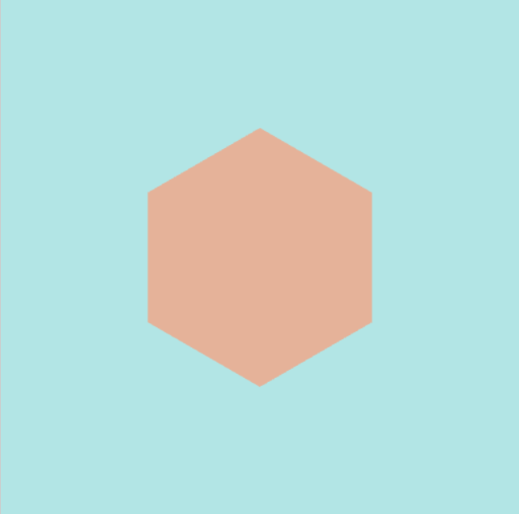
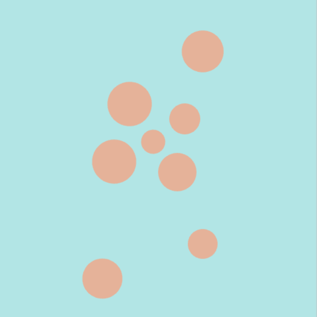

Verkefni 1
Duckshot Leikur
Skotleikur þar sem þú reynir að skjóta allar endurnar með takmörkuðum kúlum.
 Skoða verkefni
Skoða verkefni
Verkefni 2
Heimadæmi 2
Dæmi 1
Sierpinski þríhyrningur notandi "chaos method" hægt er að velja "a" sem lætur upphafspunktinn byrja á 100,100 eða "b" sem lætur vinstri-botnpunkt vera valin í 90% tilvika.
 Skoða Verkefni
Skoða Verkefni
Dæmi 2
Þríhyrningur í hring hér er hægt að nota slider til þess að velja hornpunkta á hyrningum sem byrjar á þríhyrningi og getur farið upp í 50-hyrning eða hring.
 Skoða VerkefniDæmi 4
Hér er punktasmellir sem býr til hring með slembinni stærð þar sem músin var smellt
 Skoða VerkefniHeimadæmi 3
Dæmi 1
Sierpinski þríhyrningur sem hægt er að stækka og færa með músinni, hægt er að skipta um lit á þríhyrningnum með því að smella á bilstöngina
Skoða Verkefni